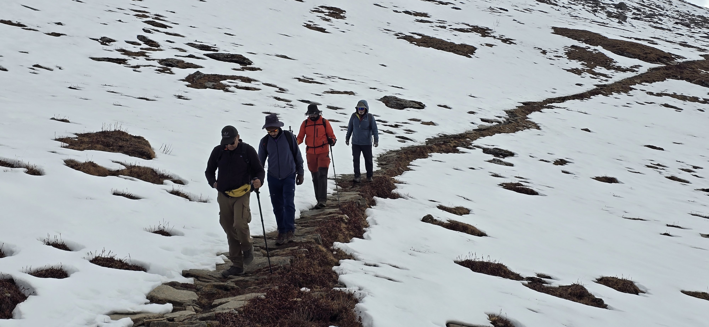
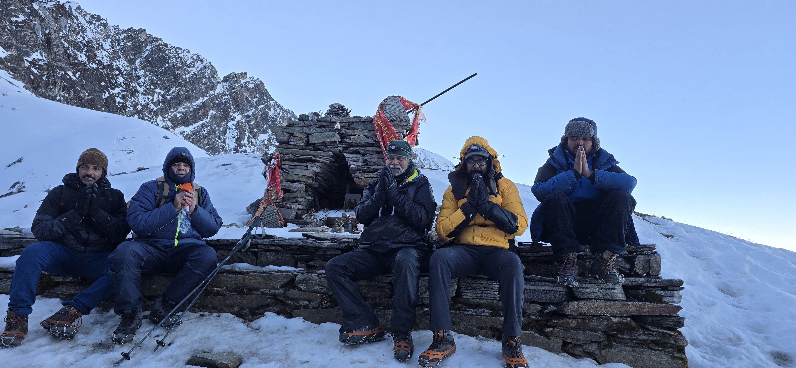
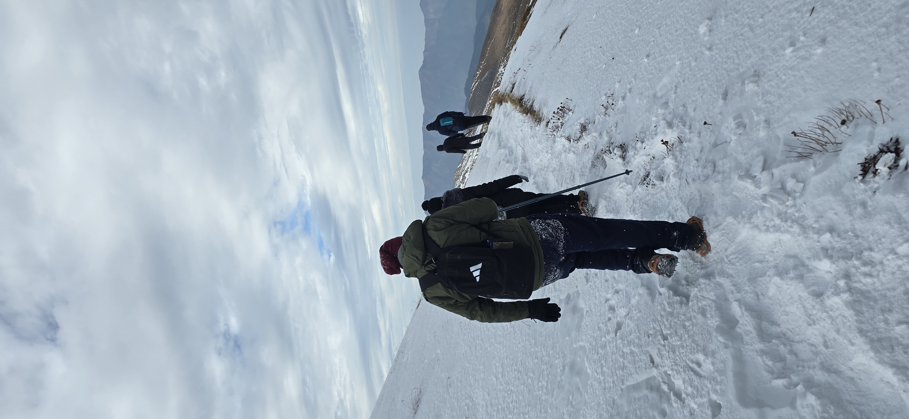
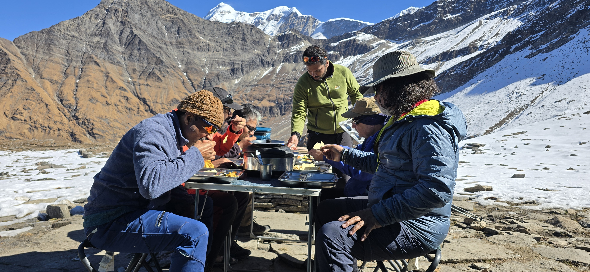
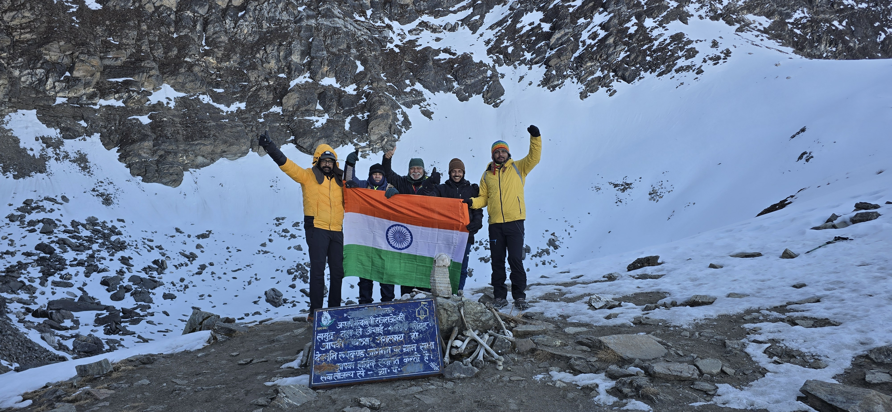

About the Roopkund Trek
Roopkund — the legendary "Skeleton Lake" — is a high-altitude glacial tarn cradled beneath the Trishul massif in Uttarakhand's Garhwal Himalaya, and reaching it is one of India's most storied alpine adventures. Hundreds of ancient human bones rest along its frozen rim, a mystery that still draws scientists and trekkers alike. The trail climbs from the oak forests around Lohajung onto Ali and Bedni Bugyal, among the largest alpine meadows in Asia, before turning steep and rocky toward the lake at 16,499 ft.
Expect sweeping panoramas of Trishul and Nanda Ghunti, exposed ridge campsites under enormous night skies, and a genuine taste of Garhwali mountain life along the way. It is a demanding but deeply rewarding Himalayan crossing for trekkers ready to earn real altitude.
Roopkund Trek Highlights
- 💀 The mysterious Skeleton Lake at 16,499 ft
- 🌿 Crossing Ali & Bedni Bugyal, Asia's vast alpine meadows
- 🏔 Up-close views of Trishul & Nanda Ghunti
- 🏕 Remote ridge camps at Patar Nachauni & Bhagwabasa
- 🌅 Sunrise over the Trishul massif on summit day
- 🏘 Traditional Garhwali hamlets like Didna
Best Time to Visit Roopkund
Two windows work best. Late spring to early summer (May–June) keeps snow lingering around the lake while the lower meadows turn green. Autumn (September–October) brings crisp air and the clearest mountain views of the year. The monsoon months of July and August are best avoided, as the trails turn slippery and the approach roads are landslide-prone.
Roopkund Trek Itinerary (Day-by-Day)
Day 1: Drive from Dehradun to Lohajung
- Your Roopkund Trek adventure begins with a scenic drive from Dehradun to Lohajung, the traditional base camp for one of Uttarakhand's most iconic Himalayan treks.
- Travel through picturesque mountain roads, charming villages, dense pine forests, and river valleys while enjoying breathtaking views of the Garhwal Himalayas.
- Upon arrival in Lohajung, complete a gear check, acclimatize to the mountain environment, and prepare for the exciting trekking journey ahead.
Day 2: Lohajung to Didna Village
- Begin the trek with a descent to the Neel Ganga River followed by a gradual climb through beautiful oak and rhododendron forests.
- The trail offers stunning views of surrounding valleys and introduces trekkers to the rich natural beauty of Uttarakhand.
- Didna Village provides an authentic cultural experience, offering a glimpse into traditional Garhwali mountain life and hospitality.
Day 3: Didna Village to Ali Bugyal
- Leave the forests behind as you enter the spectacular Ali Bugyal, one of Asia's largest alpine meadows and a highlight of the Roopkund Trek.
- Enjoy panoramic views of Mount Trishul, Mrigthuni, and rolling green meadows stretching across the Himalayan landscape.
- Camp beneath a star-filled sky while witnessing unforgettable sunset views across the vast grasslands.
Day 4: Ali Bugyal to Patar Nachauni
- Follow a scenic ridge trail connecting the famous Ali Bugyal and Bedni Bugyal meadows, two of the most beautiful trekking destinations in India.
- Marvel at uninterrupted Himalayan views while learning about the legends and folklore associated with the mysterious Roopkund Lake.
- Reach Patar Nachauni campsite and enjoy dramatic mountain sunsets in a peaceful alpine setting.
Day 5: Patar Nachauni to Bhagwabasa
- The landscape becomes rugged and high-altitude as the trail ascends through rocky terrain and occasional snow patches.
- Experience the raw beauty of the Himalayas while gaining elevation toward the final base camp.
- Bhagwabasa serves as the launch point for the Roopkund summit day and offers stunning views of surrounding mountain ridges.
Day 6: Bhagwabasa to Roopkund Lake (Skeleton Lake) and Return to Patar Nachauni
- Start before dawn for the challenging ascent to Roopkund Lake, one of the most famous high-altitude lakes in the Indian Himalayas.
- Discover the mysterious Skeleton Lake, known worldwide for its ancient human skeletal remains, while enjoying spectacular views of Trishul, Chaukhamba, Nanda Ghunti, and Neelkanth peaks.
- After spending time at the lake and capturing breathtaking Himalayan panoramas, descend safely back to Patar Nachauni for an overnight stay.
Day 7: Patar Nachauni to Lohajung
- Retrace your route through the scenic alpine meadows, forests, and ridgelines of the Roopkund Trek.
- The descent reveals fresh perspectives of Ali Bugyal and Bedni Bugyal, offering equally spectacular views on the return journey.
- Arrive back in Lohajung and celebrate the successful completion of one of Uttarakhand's most rewarding treks.
Day 8: Lohajung to Dehradun
- After breakfast, begin the return drive from Lohajung to Dehradun through the scenic landscapes of Uttarakhand.
- Carry home unforgettable memories of Roopkund Lake, Ali Bugyal, Bedni Bugyal, and the breathtaking Garhwal Himalayas.
- Reach Dehradun by evening, marking the end of an incredible Himalayan trekking adventure.
Inclusions & Exclusions
Inclusions
- All accommodation during the trek (camping + guesthouse)
- All meals from Day 1 dinner to the final breakfast
- Certified trek leader & trained support staff
- Porters for shared camp equipment
- Forest entry & camping permits
- First aid kit and emergency support
- Mountain Vibes duffel bag
Exclusions
- Travel to/from Kathgodam
- Personal trekking gear and clothing
- Travel insurance
- Tips for guides & porters
- Personal medication
- Mules/porters for personal luggage
What to Carry for the Roopkund Trek
- 🥾 Waterproof trekking shoes
- 🧥 Thermal layers and a down jacket
- 🦯 Trekking poles
- 🧤 Gloves and a woollen cap
- 🕶 UV sunglasses and sunscreen
- 💊 Personal medicines and a small first aid kit
- 🌧 Rain cover and a 50–60L backpack
Roopkund Trek Photos




Roopkund Trek 5.jpg)

Roopkund Trek Reviews
Roopkund had been on my list for years, and the mystery of the skeletons plus the sheer scale of Ali Bugyal more than lived up to it. The logistics were tight and summit day was handled really safely.
The climb to the lake was tough but the views of Trishul made every step worth it. Camps were warm, food was hot, and the team never let pace get ahead of safety.
Frequently Asked Questions
How fit do I need to be for Roopkund?
Roopkund is graded Moderate to Difficult. You'll face steep climbs, a high-altitude summit day and changeable weather, so build cardio fitness in advance — regular jogging, stair work and walks with a loaded pack all help.
When is the best time to do the Roopkund Trek?
Aim for May–June for lingering snow and green meadows, or September–October for the sharpest mountain views. Skip the July–August monsoon.
How much does the Roopkund Trek cost?
The Roopkund Trek with The Mountain Vibes starts from ₹18,000 per person, including camping, meals from Day 1 dinner, a certified trek leader, permits and first aid support.
Where does the Roopkund Trek start and end?
The trek starts and ends at Lohajung, roughly a 10–12 hour, 280 km drive from Dehradun.
What is the maximum altitude of the Roopkund Trek?
Roopkund Lake sits at 16,499 ft, reached on summit day from the Bhagwabasa camp at 14,100 ft.